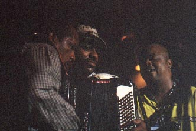

My style is more of the zaydeco and funk thing. I think adding elements of funk and hip-hop and stuff like that can give music a new life. Such as Clifton Chenier did when he came up with his generation of blues and a little bit of country. I just try to give zadeco more of a mainstream appeal. So that it can be competitive with mainstream music such as hip-hop rap and stuff like that and hopefully make it just as famous as hip-hop and rap. |
Мой стиль в основном складывается из зайдекоу и фанка. Я думаю, что привнесение элементов фанка и хип-хопа может дать новую жизнь музыке. Так поступил Клифтон Шеньер, когда он открыл свое новое поколение блюза, добавив рок-н-ролл и немного кантри. Я просто пытаюсь придать зайдекоу большую привлекательность для широкой аудитории. Так, чтобы зайдекоу мог соревноваться с мейнстримовой музыкой, вроде хип-хопа, рэп-музыки, и прочего такого. И я надеюсь, что зайдекоу будет известно не менее, чем хип-хоп и рэп. |
I was amazed of the accordion because it's got so much soul to it. I first heard those early Clifton Chenier albums and early Buckwheat Zydeco albums. Zaydeco is more of my culture. For my mother and father were raised in Louisiana. When they moved from Louisiana they brought along their cooking and their music. So I was raised up on it. Even though I'm adding elements of hip-hop and funk and stuff like that, but zaydeco is in the blood. That's my music. |
Аккордеон поразил меня, потому что в нем столько души, когда я впервые услышал ранние альбомы Клифтона Шеньера и раннего Бакуита Зайдекоу. Зайдекоу ближе моей культуре. Потому что мои отец и мать выросли в Луизиане. Когда мы уехали из Луизианы, они прихватили с собой свои домашние рецепты и свою музыку. И на этом я вырос. Хоть я и добавляю элементы хип-хопа и фанка, и прочего в этом роде, но зайдекоу в моей крови - это моя музыка! |
I really like funk too, really. Growing up in Houston I experienced a lot of that, a lot of funk stuff like that, so I kinda have love for both sides, but I have more for zydeco, you know. |
Но и фанк мне по-настоящему нравится. Я рос в Хьюстоне и слушал много фанковой музыки. Так что я вроде люблю обе эти стороны, но я ближе к зайдекоу, понимаете... |
When I first started it was strictly traditional zadeco, wasn't no elements of funk, no elements of hip-hop. It was basically straight up zydeco. But when I heard Buckwheat was adding all of that I really liked it. And me and Buckwheat got friends, and he started talking to me a lot and I started adding a lot of different elements myself, heh! :-) |
Когда я начал, я играл строго традиционные зайдекоу, никаких элементов фанка, никаких элементов хип-хопа. Это бы строго прямолинейный зайдекоу. Но когда я услышал, как Бакуит добавляет все это, мне это по-настоящему понравилось. И мы с Бакуитом подружились, он много со мной обсуждал, и я сам начал добавлять (в музыку) раличные элементы. |
I have three. But My latest album "Funky Nation", it's on Tomorrow recordings. Operated by Buckwheat Zydeco. |
У меня три альбома. Мой последний - "Фанковый народ", он вышел на "Туморроу рекордз", которым управляет Бакуит Зайдекоу. |
